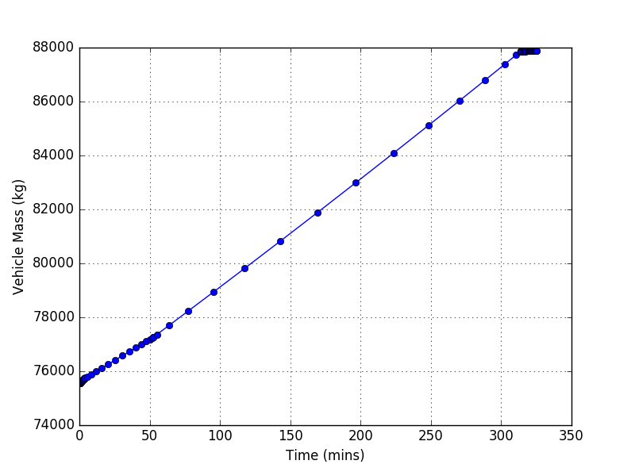

Introduction
The purpose of this tutorial is to highlight some of SUAVE’s more exotic propulsion system capabilities. This tutorial assumes that the user has completed the Boeing 737-800 tutorial, and has some familiarity with SUAVE’s propulsion system data structures.
Baseline Case
Open the file called “tut_lithium_air_jet_sizing.py” in a text editor or IDE.
Look over the plots, to gain a feel for the various idiosyncrasies of the design. Note the significant rise in aircraft mass, as a result of the lithium-air batteries.

battery = configs.base.energy_network['battery']
battery.specific_energy=2000*Units.Wh/Units.kg
battery.specific_power =.67*Units.kW/Units.kg
Run the script (python tut_lithium_air_jet.py).
Now try changing the motor efficiency from .95 to .9 and running the script (line 513).
net.nacelle_diameter = ducted_fan.nacelle_diameter
net.engine_length = ducted_fan.engine_length
net.number_of_engines = ducted_fan.number_of_engines
net.motor_efficiency =.95
Note the sensitivity of vehicle energy and mass requirements to these various propulsion system assumptions.
Now try changing the cruise range of the aircraft (line 868, segment.distance).
segment = Segments.Cruise.Constant_Speed_Constant_Altitude()
segment.tag = "cruise"
# connect vehicle configuration
segment.analyses.extend( analyses.cruise )
# segment attributes
segment.atmosphere = atmosphere
segment.planet = planet
segment.air_speed = 230.
segment.distance = 1947. * Units.nmi
Try changing other parameters (e.g. specific power, cruise altitude), and observe their effects on the overall design.